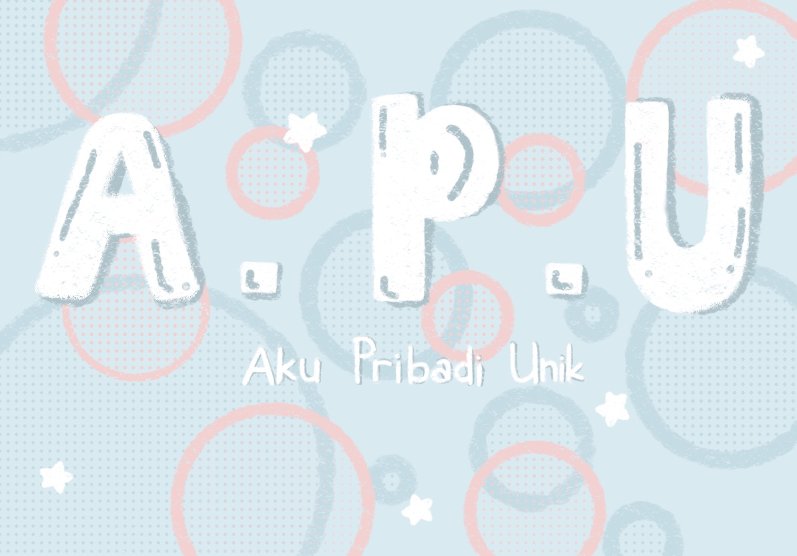
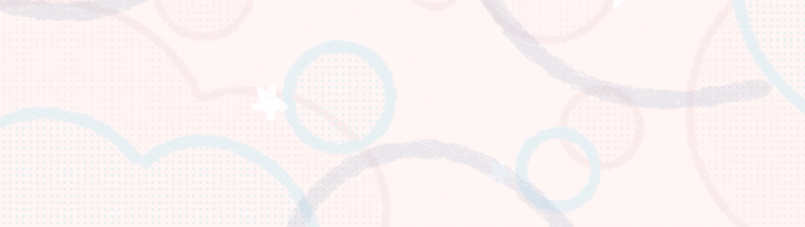

Orang yang Unik?
Orang-orang dengan kepribadian yang unik cenderung memiliki pandangan dunia yang berbeda, cara berpikir yang kreatif, dan minat serta kegemaran yang tidak umum. Mereka tidak takut untuk mengekspresikan diri mereka sendiri secara autentik, bahkan jika itu berarti berbeda dari norma sosial atau ekspektasi
Baca Lebih LanjutMenyadari aku pribadi yang unik sehingga bisa menghargai kesetaraan gender
Apa itu Kesetaraan Gender? Kesetaraan gender adalah konsep yang mengacu pada keadaan di mana laki-laki dan perempuan memiliki hak, tanggung jawab, dan kesempatan yang sama di semua bidang kehidupan, termasuk di rumah, sekolah, tempat kerja, dan masyarakat luas. Tujuannya adalah untuk menghilangkan diskriminasi berdasarkan gender dan memastikan bahwa semua orang memiliki kesempatan yang sama untuk berkembang dan mencapai potensinya tanpa dibatasi oleh stereotip atau bias gender.
